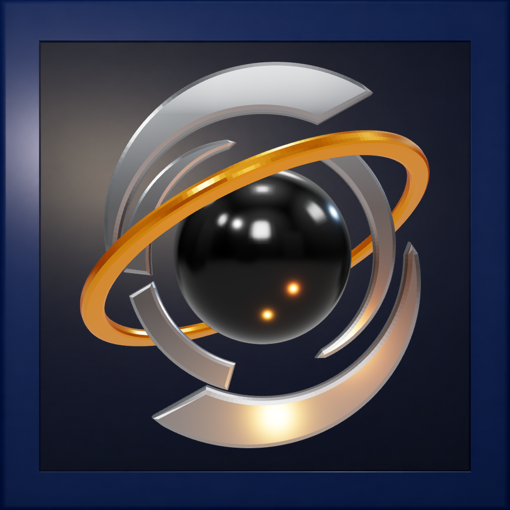

Windows
Instalador EXE para 64 bits.
Descarga no publicadaVersión — · Windows
Integridad pendiente
Cómo instalar en Windows
AURIC AIINTELIGENCIA ARTIFICIAL · WINDOWS Y ANDROID
AURIC AI
Una experiencia de chat con IA, historial sincronizado, Markdown, modelos, búsqueda web y conexión a AuricCode desde el móvil.
WINDOWS / ANDROIDCuenta Auric para sincronizar tus conversaciones.
LA CONVERSACIÓN EN PRIMER PLANO
Conversa con distintos modelos, organiza el historial y utiliza respuestas bien formateadas. Las herramientas que trabajan directamente en el PC pertenecen a AuricCode, no a AuricAI.
UNA CUENTA, TUS DISPOSITIVOS
Accede a conversaciones sincronizadas y usa Auric Remote para vincular el móvil con AuricCode cuando el PC autorice la sesión.
El funcionamiento completo de Google y Remote requiere validación en dispositivos reales.
CONOCE LA APLICACIÓN
Las capturas reales de la versión nativa Windows y Android todavía están pendientes de verificar. No mostramos capturas de una web como si fueran de la app.
DESCARGA OFICIAL
Instala la versión pública disponible, no el código fuente. Elige la plataforma y descarga el instalador oficial de la versión publicada.
Instalador EXE para 64 bits.
Descarga no publicadaVersión — · Windows
Integridad pendiente
Cómo instalar en WindowsAPK para dispositivos ARM64.
Descarga no publicadaVersión — · Android
Integridad pendiente
Cómo instalar en AndroidComprobando si hay descargas públicas verificadas…
INSTALAR Y ACTUALIZAR
Pasos para Windows, Android y actualizaciones sin perder datos.